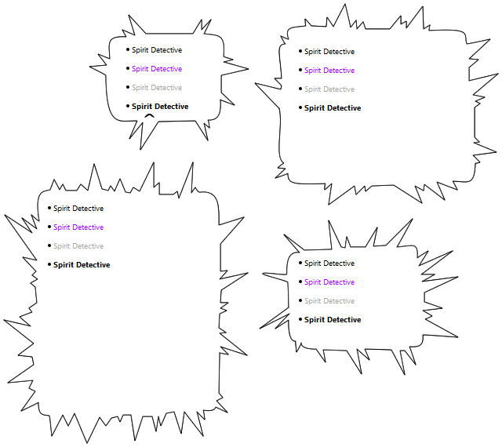
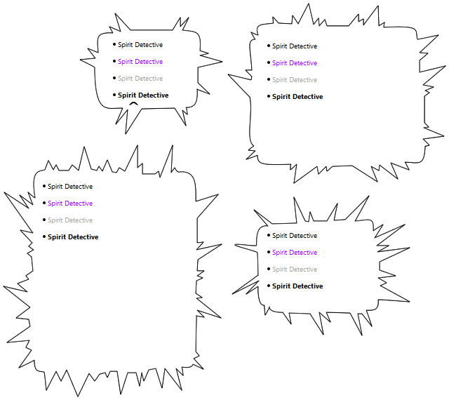

Spirit Detective S
Spirit Detective S is a manga styled balloon. It comes with 4 sizes included, directional variants for each size, and 8 unique styles.




Spirit Detective S is a manga styled balloon. It comes with 4 sizes included, directional variants for each size, and 8 unique styles.

Initial Release.
"s q u a r e. as all things should be" ~ Zichqec, November 13, 2022